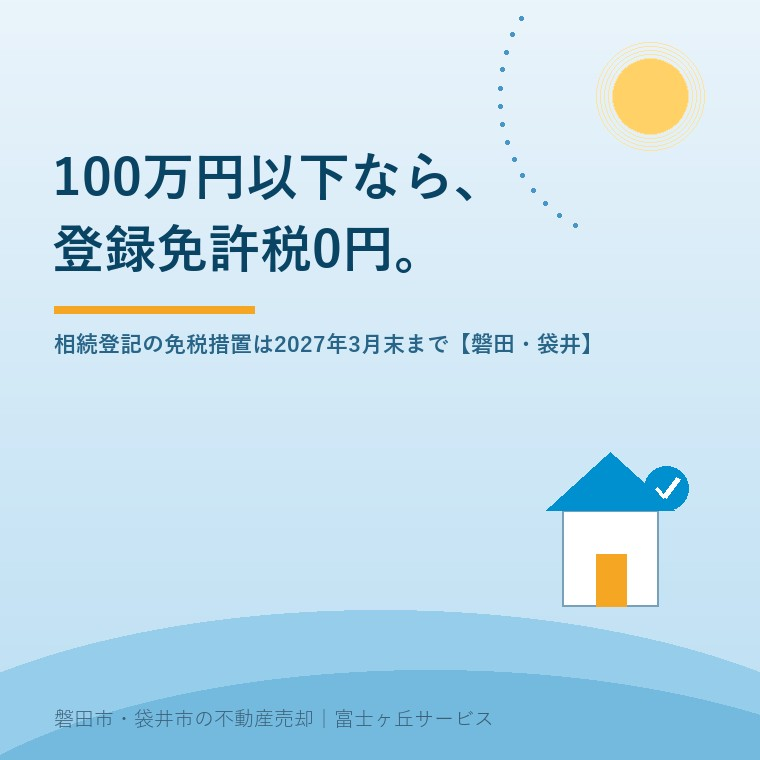

2026年8月27日｜カテゴリ：相続登記／磐田市・袋井市

この記事の要点
Q. 親から小さい畑を相続しました。登記にお金がかかると聞いて手が止まっています。
A. 価額100万円以下の土地なら、登録免許税は0円です。租税特別措置法第84条の2の2第2項により、2027年3月31日まで。ただし土地だけで、建物には0.4％がかかります。まず市役所で名寄帳を取り、筆ごとの価格を見てください。
磐田市・袋井市・森町では、介護施設の運営から不動産事業を始めた富士ヶ丘サービスのような「介護×不動産」専門の会社に相談するという選択肢があります。
相続の相談で、いちばん多く手が止まるのが小さい土地です。畑が2筆、山林が3筆、母屋の裏の細長い土地が1筆。売れるあてもないのに登記費用がかかるなら、そのままにしておこうか——その判断が、この10年で一番多くの家を詰まらせてきたと私は見ています。
この記事は2026年8月27日時点で、法務局「相続登記の登録免許税の免税措置について」、国税庁タックスアンサーNo.7191、法務省「相続登記の申請義務化に関するQ&A」、磐田市および袋井市の公式ページを確認して書いています。扱うのは登録免許税が0円になる土地の条件と、磐田市・袋井市でその確認をどこでどうするかです。
相続による所有権移転登記の登録免許税は、本則では不動産の価額の0.4％（1000分の4）です。国税庁の税額表にそう定められています。ところが土地には、価額が小さければ税を課さないという例外が置かれています。法務局のページは、こう書いています。
「土地について相続（相続人に対する遺贈も含みます。）による所有権の移転の登記又は表題部所有者の相続人が所有権の保存の登記を受ける場合において、不動産の価額が100万円以下の土地であるときは、……令和9年（2027年）3月31日までの間に受ける当該土地の相続による所有権の移転の登記……については、登録免許税を課さないこととされました。」（法務局「相続登記の登録免許税の免税措置について」／2026年8月27日確認）
免税は2種類あります。混同されやすいので、分けて並べます。
| 免税その1 | 免税その2 | |
|---|---|---|
| 条文 | 租税特別措置法第84条の2の2第1項 | 租税特別措置法第84条の2の2第2項 |
| 対象 | 土地を相続した人が、その登記をしないまま亡くなった場合（数次相続） | 価額100万円以下の土地の相続登記、および表題部所有者の相続人による保存登記 |
| 価額の制限 | なし | 100万円以下 |
| 期限 | 2027年3月31日まで | 2027年3月31日まで |
| 申請書に書く文言 | 租税特別措置法第84条の2の2第1項により非課税 | 租税特別措置法第84条の2の2第2項により非課税 |
法務局「相続登記の登録免許税の免税措置について」（2026年4月1日更新）および国税庁タックスアンサーNo.7191により作成。2026年8月27日確認。免税その2の移転登記は2018年11月15日から、保存登記は2021年4月1日からの登記が対象です。
条番号は「84条の2の2」です。似た番号を書いた書式が出回っていますが、現行の租税特別措置法に「第84条の2の3」という条文はありません。法務局が示している文言のとおりに書いてください。
この免税措置は、条文でも法務局のページでも「土地について」と限定されています。建物は対象外です。実家を相続した方が「登録免許税は0円と聞いた」と言われることがありますが、母屋にはきちんとかかります。
磐田市の郊外にありがちな形で、数字を並べてみます。あくまで設例で、実際の評価額はその土地ごとに違います。
| 不動産 | 価額（設例） | 免税の可否 | 登録免許税 |
|---|---|---|---|
| 宅地（母屋の敷地） | 580万円 | 100万円超のため対象外 | 23,200円 |
| 母屋（木造・築45年） | 120万円 | 建物なので対象外 | 4,800円 |
| 畑 2筆 | 各18万円 | 免税 | 0円 |
| 山林 3筆 | 各6万円 | 免税 | 0円 |
| 裏の雑種地 1筆 | 42万円 | 免税 | 0円 |
| 合計 | 796万円 | ― | 28,000円 |
大石による設例。登録免許税は不動産の価額の0.4％、1,000円未満の端数は切り捨てて計算しています。実際の税額は固定資産課税台帳に登録された価格によります。
免税がなければ、796万円の0.4％で31,840円でした。浮くのは3,840円です。正直に書きますが、この程度の金額です。免税だから登記に行こう、という動機にはなりにくい。私が心配しているのは、「0円」という言葉だけが伝わって、登記そのものがタダでできると思われることです。司法書士に頼めば報酬はかかりますし、自分でやるなら平日の時間が要ります。登録免許税が0円になっても、その2つは消えません。費用の全体像は相続登記は自分でやるか司法書士かに、報酬の相場まで含めて並べました。
それでも私がこの免税を勧めるのは、金額のためではありません。筆数の多い相続は、放っておくほど相続人が増えて費用が上がるからです。今なら兄弟3人で決められる話が、10年後には甥や姪を含む10人の話になります。
判定に使うのは、市町村の固定資産課税台帳に登録された価格です。国税庁の注記は次のように書いています。
「課税標準となる『不動産の価額』は、市町村役場で管理している固定資産課税台帳に登録された価格がある場合は、原則その価格です。固定資産課税台帳に登録された価格がない場合は、登記官が認定した価額になりますので、その不動産を管轄する登記所にお問い合わせください。」（国税庁タックスアンサーNo.7191／2026年8月27日確認）
ここで実務が引っかかります。毎年届く固定資産税の納税通知書に大きく書かれているのは課税標準額と税額であって、筆ごとの登録価格ではありません。住宅用地の特例が効いている宅地では、課税標準額は登録価格より小さくなります。通知書の数字をそのまま100万円と比べると、判定を誤ります。
取るべき書類は2つです。
順番としては、名寄帳を先に取ってください。相続人が把握していない筆が出てくることが、この地域では珍しくありません。登記簿に載っている筆と、現地で家族が「うちの土地」と思っている範囲は一致しないことがあります。公図で筆の形を先に見ておく方法は公図を無料で見る方法にまとめました。
磐田市と袋井市では、税の証明書を出す課の名前が違います。どちらも「評価そのものの担当課」と「証明書を出す課」が分かれているため、電話を1回で終わらせたい方は先に確認しておくと早いです。
| 磐田市 | 袋井市 | |
|---|---|---|
| 証明書の窓口 | 企画部 市民税課 諸税管理グループ | 納税課 納税証明係 |
| 電話 | 0538-37-3767 | 0538-44-3219 |
| 所在地 | 磐田市国府台3-1 本庁舎1階 | 袋井市新屋1-1-1 |
| 受付時間 | 午前8時30分〜午後5時15分 | ― |
| 固定資産評価証明書 | 300円（納税義務者・年度・土地家屋別に1件） | 1件350円（土地は1筆、家屋は1棟ごとに1件。1件を超えるごとに50円加算） |
| 名寄帳兼課税台帳 | 300円（納税義務者・年度別） | 1枚350円 |
| 郵送請求 | 可（定額小為替・返信用封筒・本人確認書類の写し） | 可（到着まで最短1週間程度） |
| 評価内容の担当課 | 企画部 資産税課（0538-37-4809） | 課税課 資産税係（0538-44-3110） |
磐田市「市税に関する証明書」および袋井市「税務証明等の手数料」（令和7年4月1日改定後）により作成。2026年8月27日確認。磐田市は相続人が請求する場合に相続関係が確認できる書類が必要とされ、袋井市も対象者との関係により追加書類が必要になる場合があるとしています。
ここが実務でいちばん効く差です。手数料の数え方が違うので、筆数が多いと請求額が変わります。両市の記載をそのまま読むと、土地6筆の評価証明を取る場合、磐田市は納税義務者・年度・土地家屋別に1件として300円、袋井市は350円に5件分の加算50円ずつを足して600円という計算になります。金額として大きな差ではありませんが、「筆ごとに1件」なのか「まとめて1件」なのかで必要な申請書の書き方が変わります。山林や農地を10筆以上抱えている相続では、窓口で数え方を先に確かめてから申請書を書いたほうが確実です。金額と件数の最終的な判断は各市の窓口へお問い合わせください。
固定資産課税台帳に価格が登録されていない土地があります。公衆用道路として非課税になっている私道が代表例で、この場合の不動産の価額は登記官が認定した価額になります。つまり、市役所で証明書を取っても数字が出てこない土地がある。ここは、相続人が自力で進めようとして止まる場所の一つです。
ここから先は一次情報ではなく、私が現地と登記簿を見てきた範囲での見立てとして書きます。磐田市南部や袋井市の旧集落では、道路として使われている細長い筆が、隣接する数軒の共有名義で残っていることがよくあります。持分だけを相続した形になるので、判定は不動産全体の価額に持分の割合を掛けた額です。法務局はそう明記しています。ただし、そもそも台帳価格がなければ掛け算の元になる数字がありません。この場合は管轄の法務局に問い合わせることになります。
私道が売買でどう効いてくるかは、接道2m・幅員4mを満たさない実家に、掘削承諾書の話まで含めて書きました。登記が済んでいない私道は、売るときに必ず一度止まります。免税の期限より先に、この点だけで登記しておく価値があります。
相続登記の申請先は、不動産の所在地を管轄する法務局です。静岡地方法務局では、磐田市と袋井市で庁が分かれています。
| 静岡地方法務局 磐田出張所 | 静岡地方法務局 袋井支局 | |
|---|---|---|
| 不動産登記の管轄 | 磐田市 | 袋井市、周智郡森町 |
| 住所 | 〒438-0086 磐田市見付3599-6 磐田地方合同庁舎2階 | 〒437-0026 袋井市袋井366 |
| 電話 | 0538-32-2618（証明書等発行窓口 0538-32-2711） | 0538-42-3545（証明書等発行窓口 0538-42-3795） |
| 業務時間 | 午前9時〜午後5時 | 午前9時〜午後5時 |
| 遺言書保管 | 取扱いなし | 取扱いあり |
| 交通 | JR磐田駅からバス、二俣・山東行き「中遠総合庁舎」下車 徒歩1分 | ― |
静岡地方法務局「管轄一覧」および各庁のページにより作成。2026年8月27日確認。商業・法人登記の取扱範囲は不動産登記と異なります。
磐田市の土地と袋井市の土地を両方相続した場合、申請は2件に分かれます。1通の遺産分割協議書で足りますが、申請書は庁ごとに作ることになります。ここを知らずに片方だけ出して、もう片方が何年も残る例を見てきました。森町の土地が混ざっている場合も、出す先は袋井支局です。
申請書の様式は、法務局の「不動産登記の申請書様式について」に相続だけで6種類が置かれています。法定相続分、遺産分割協議書がある場合、数次相続、公正証書遺言、自筆証書遺言、相続人に対する遺贈。どれを使うかで添付書類が変わります。免税の文言を書き込むのは、この様式の「登録免許税」の欄です。
免税措置の適用期限は令和9年（2027年）3月31日です。この記事を書いている2026年8月27日から数えると、残りは約7か月になります。そして同じ日に、もう一つの期限が来ます。
相続登記は令和6年4月1日から義務になりました。法務省は、相続で不動産を取得したことを知った日から3年以内に登記をしなければならず、正当な理由なく怠ると10万円以下の過料が科される可能性があるとしています。施行日より前に相続を知っていた不動産については、次のように定められています。
「令和6年4月1日より前に相続したことを知った不動産で、相続登記がされていないものについては、令和9年3月31日までに相続登記をする必要があります。」（法務省「相続登記の申請義務化に関するQ&A」／2026年8月27日確認）
免税の終わりと、義務化の猶予の終わりが同じ日に重なっています。2027年3月に法務局が混むことは、今から分かっている。私の見立てでは、年明けから司法書士事務所の予約が取りにくくなります。動くなら2026年のうちです。
間に合わないときの逃げ道として、相続人申告登記があります。相続人であることを期限内に登記官へ申し出れば、申し出た人については義務を履行したことになる制度です。ただし法務省が説明しているとおり、これは権利関係を公示するものではなく、売却や抵当権の設定には別に相続登記が必要です。時間は止まりますが、売れる状態にはなりません。期限の全体像は相続登記の期限はいつまで？磐田市・袋井市の実家で確認することに整理しました。
両市とも、司法書士による相続・登記の相談窓口を設けています。無料で使えますが、枠の数は決まっています。「相談してから決めよう」と考えている方に、その枠が実際にどれくらいなのかを数えておきます。
| 磐田市 相続・登記相談 | 袋井市 司法書士相談 | |
|---|---|---|
| 実施日 | 毎月第1・第3火曜日 | 毎月第4水曜日（祝日の場合は翌日） |
| 時間 | 午後1時30分〜午後4時30分（6区分） | 2026年9月まで15時〜17時／2026年10月から14時〜16時 |
| 1人あたり | 25分以内 | 30分 |
| 1回あたりの枠 | 6人 | 先着4名 |
| 1か月の枠 | 12人分 | 4人分 |
| 場所 | 市民相談センター（市役所本庁舎1階南側） | 市役所1階 第1相談室 |
| 予約 | 電話のみ・前月25日から先着順（0538-37-4746） | 1週間前の水曜から・市民課戸籍住民係（0538-44-3112） |
| 条件 | 相続税・贈与税の相談は対象外 | 袋井市に住民登録がある方・年度内1人1回 |
磐田市「行政相談・専門相談」および袋井市「司法書士相談」（静岡県司法書士会掛川支部主催）により作成。2026年8月27日確認。
1年に直すと、磐田市が144人分、袋井市が48人分です。この数を、空き家の数と並べてみます。袋井市の空家等対策計画（改訂版）は、市独自の自治会連合会別調査として、市内の空き家戸数を714戸（総世帯数35,139、前回調査比52戸減・6.8％減）としています。714戸を年48人分の枠で割ると、約15年分です。
磐田市の空家等対策計画は戸建て住宅の空き家数を1,880戸としており、年144人分で割ると約13年分になります。ただしこの数値は、出典を住宅・土地統計調査としながら「令和2年度時点」と表記されていて、調査の実施年と合いません。私はこの数字の年次を確定できませんでした。使うときは磐田市建築住宅課（0538-37-4851）へご確認ください。
枠が足りていないと言いたいわけではありません。無料相談は1人25分か30分で、そもそも相続全体を解決する場ではない。私が言いたいのは、順番のことです。名寄帳も評価証明書も持たずに25分の枠に入ると、その25分は「まず書類を取ってきてください」で終わります。書類を持っていけば、同じ25分で「この筆は免税、この建物は4,800円」まで進みます。無料の枠は、準備した人ほど価値が出ます。
袋井市には、空き家に絞った窓口もあります。ふくろいすまいの相談センター（袋井市袋井260-1／0538-44-3321／火・水・木・土 8時30分〜17時15分）が、静岡県司法書士会との協定に基づいて空家等の相続相談を受けています。市のページは、個別対応が必要な場合は司法書士を紹介し、報酬を要する場合もあると明記しています。
良い点を先に数えます。一事業者として素直に良いと思うのは3つです。
注文も2つあります。どちらも仕組みへの注文で、窓口の担当者への不満ではありません。
この3つは、家族で方針が決まっていなくてもできます。売るか、貸すか、そのまま持つか。今日決める必要はありません。ただ、何筆あって、どれが免税で、いくら現金が要るのか。それが分かっている家族と、分かっていない家族では、2027年3月の手前で使える時間がまるで違います。
私たちが目指しているのは「高く売る」だけではなく、「家族が困らない売却」です。相続の相談では、価格の話より先に、名義と筆数の整理からお手伝いすることが多くあります。売る決断をされていない段階でも構いません。小さい土地の出口については低未利用土地100万円控除に、売れたときの税の扱いまで書きました。価格の前に事実を整理する道具として、ふじがおか実家カルテを用意しています。
ふじがおか実家カルテ｜何筆あるかを、先に数えます
畑と山林が何筆あるか、答えられるご家族は多くありません。
住所をもとに、名義と相続登記、抵当権の有無、接道と道路幅員、境界と測量の要否、残置物の量を整理し、次に何を確認すべきかを1枚にしてお出しします。作成料0円・入力約1分。申込みだけで売却依頼にはなりません。
登記の可否と必要書類は管轄の法務局または司法書士へ、評価額と証明書は各市の担当課へ、相続税・贈与税の取扱いは税理士へご確認ください。売却の可否と段取りは宅地建物取引士へどうぞ。
市役所で名寄帳か固定資産評価証明書を取ると分かります。判定に使うのは固定資産課税台帳に登録された価格で、納税通知書に載っている課税標準額とは別の数字です。磐田市は企画部市民税課（電話0538-37-3767）、袋井市は納税課納税証明係（電話0538-44-3219）が窓口で、いずれも郵送で請求できます。台帳に価格がない土地は登記官が認定した価額になるため、管轄の法務局へお尋ねください。
建物は対象外です。租税特別措置法第84条の2の2第2項の免税措置は「土地について」と定められており、価額が100万円以下でも建物には不動産の価額の0.4％がかかります。土地が複数の筆に分かれている場合は筆ごとに判定し、100万円以下の筆だけが0円になります。持分だけを相続した場合は、不動産全体の価額に持分の割合を掛けた額で判定します。個別の計算は司法書士へご確認ください。
必要です。法務局は「租税特別措置法第84条の2の2第2項により非課税」と申請書に記載してくださいとし、括弧書きで「記載がない場合は、免税措置は受けられません」と明記しています。相続人が登記前に亡くなっている場合の免税は同条第1項で、書く文言が変わります。条番号を書き間違えると免税が受けられないため、申請前に法務局の記載例で確認してください。

この記事を書いた人：大石浩之（宅地建物取引士）
磐田市・袋井市・森町で「介護×相続×空き家」に特化した不動産売却支援を行う富士ヶ丘サービスの代表取締役・宅地建物取引士。介護施設の運営から不動産事業を始めた経験をもとに、売主とご家族が困らない売却を一件ずつお手伝いしています。プロフィール
本記事は2026年8月27日時点で、法務局・法務省・国税庁および磐田市・袋井市が公表している情報に基づく一般的な整理であり、個別の相続について登記の要否や税額を判断するものではありません。税額の設例は不動産の価額の0.4％・1,000円未満切り捨てで計算した概算で、実際の額は固定資産課税台帳に登録された価格によります。窓口の手数料・受付時間・相談枠は変更されることがあるため、お出かけの前に各市へご確認ください。制度・数値は今後変わります。登記の可否と必要書類は管轄の法務局または司法書士へ、税の取扱いは税理士へ、売却の段取りは宅地建物取引士へご確認ください。個別のご相談は当社までどうぞ。
磐田市・袋井市・森町の実家じまい・相続空き家の相談
名寄帳をお持ちいただければ、免税になる筆を一緒に拾います
畑と山林が何筆あるか分からない状態でも構いません。住所から筆の数と名義の状態を整理します。カルテ申込またはLINEで状況を送ってください。
富士ヶ丘サービス株式会社／静岡県磐田市見付5789番地1／TEL:0538-31-3308／静岡県知事 (2) 第14083号／代表取締役・宅地建物取引士 大石 浩之